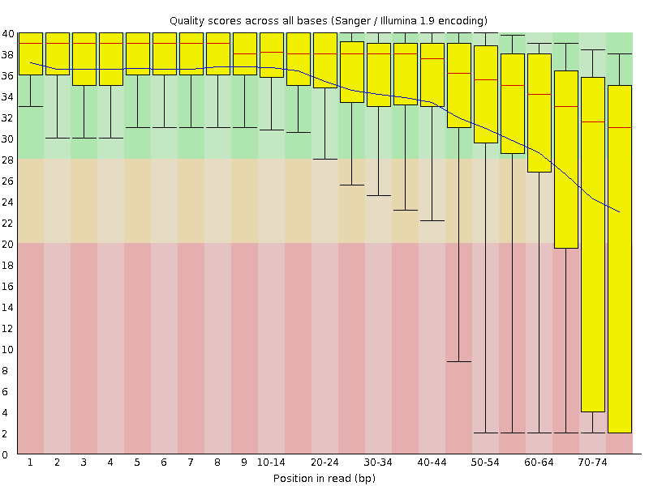
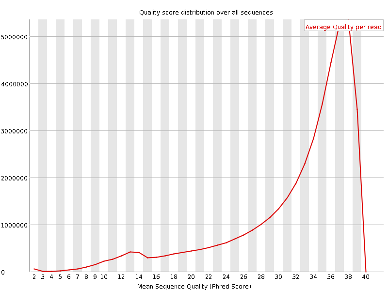
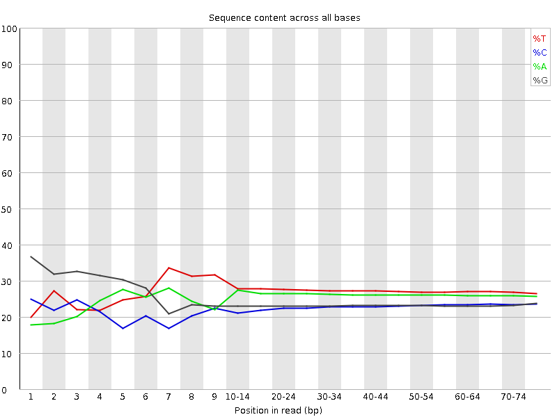
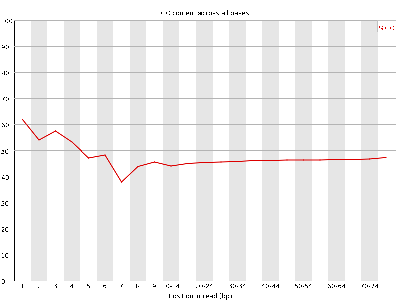
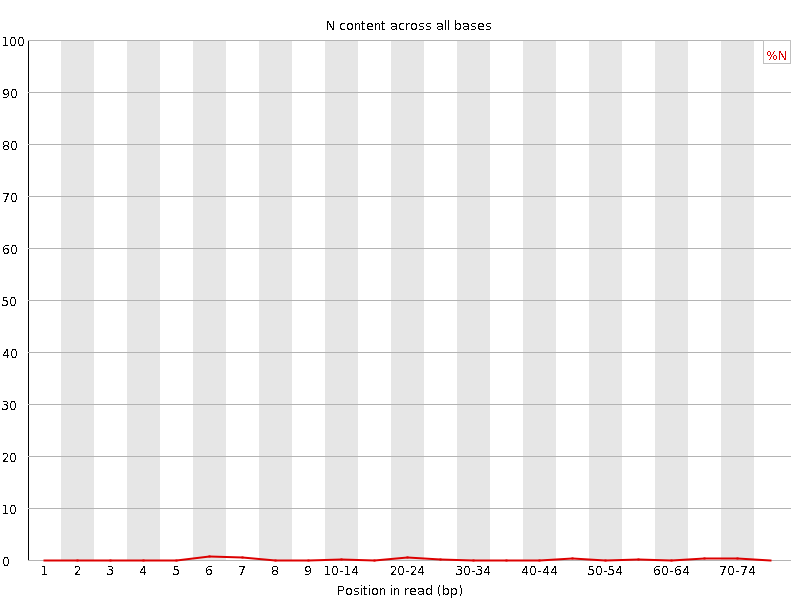
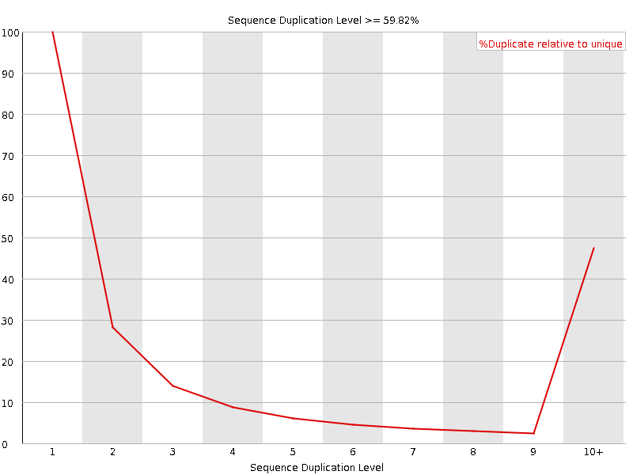
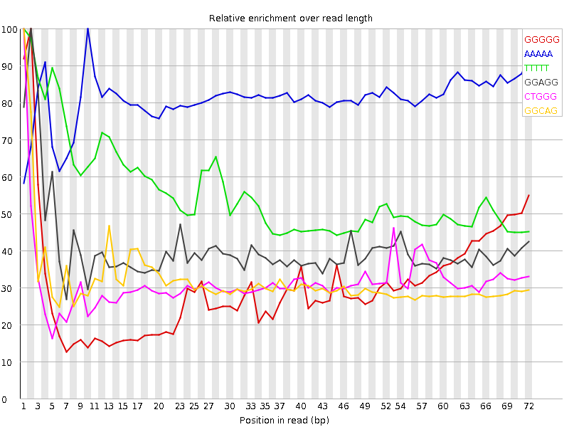

![[OK]](Icons/tick.png) Basic Statistics
Basic Statistics
| Measure | Value |
|---|---|
| Filename | SRR315301_1.fastq |
| File type | Conventional base calls |
| Encoding | Sanger / Illumina 1.9 |
| Total Sequences | 43175617 |
| Filtered Sequences | 0 |
| Sequence length | 76 |
| %GC | 46 |
![[FAIL]](Icons/error.png) Per base sequence quality
Per base sequence quality

Per sequence quality scores

![[WARN]](Icons/warning.png) Per base sequence content
Per base sequence content

Per base GC content

Per sequence GC content

Per base N content

Sequence Length Distribution

Sequence Duplication Levels

Overrepresented sequences
No overrepresented sequences
Kmer Content

| Sequence | Count | Obs/Exp Overall | Obs/Exp Max | Max Obs/Exp Position |
|---|---|---|---|---|
| GGGGG | 8636695 | 3.5645037 | 11.686314 | 2 |
| AAAAA | 11258455 | 3.0729132 | 3.788076 | 10 |
| TTTTT | 13228115 | 2.8515534 | 5.119344 | 1 |
| GGAGG | 6182895 | 2.34924 | 5.7956176 | 2 |
| CTGGG | 5652670 | 2.155971 | 6.813956 | 1 |
| GGCAG | 5263480 | 2.104553 | 6.591785 | 1 |
| GGGGA | 5442925 | 2.0680826 | 9.044769 | 1 |
| GGGAG | 5276215 | 2.0047395 | 6.472943 | 1 |
| TGGGG | 5394205 | 1.9550835 | 7.019053 | 1 |
| GCTGG | 5018495 | 1.914092 | 5.2301927 | 1 |
| GGGAA | 5417310 | 1.8949735 | 5.408837 | 1 |
| GGGCA | 4687550 | 1.8742727 | 5.498678 | 1 |
| GGGGC | 4244275 | 1.8433441 | 5.7699423 | 2 |
| GGGTG | 4729000 | 1.7139857 | 6.8534336 | 2 |
| GGGGT | 4681015 | 1.6965939 | 7.969563 | 3 |
| GTGGG | 4542205 | 1.6462834 | 8.302861 | 1 |
| CGGGG | 3669795 | 1.59384 | 10.120171 | 1 |
| GGTGT | 3679805 | 1.1712487 | 5.0447536 | 3 |
| GGCGG | 2542415 | 1.1042042 | 5.210618 | 1 |
| GCGGG | 2172240 | 0.9434323 | 5.2534504 | 1 |